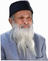

A man who dedicated his life to serving humanity.

Abdul Sattar Edhi was born in 1928 in Gujarat and later moved to Pakistan after partition. From a young age, he learned compassion and generosity from his mother, values that shaped his lifelong mission of helping those in need.
He began his humanitarian work with a small dispensary in Karachi and eventually built one of the largest welfare organizations in the world. His foundation provided medical care, shelters, orphanages, and emergency services to millions of people regardless of their religion or background.
Edhi believed that humanity itself was the greatest faith. He lived a simple life, wore modest clothes, and refused luxury despite receiving worldwide recognition. His actions inspired countless people to participate in social work and volunteerism.
Even after his passing in 2016, his legacy continues through the Edhi Foundation. His dedication to compassion, equality, and service remains an enduring example for future generations across the globe.
Established a small free dispensary in Karachi.
Founded the Edhi Foundation to expand humanitarian services.
Received the Ramon Magsaysay Award for Public Service.
Created the world's largest volunteer ambulance network.
Passed away, leaving a remarkable humanitarian legacy.
"No religion is higher than humanity."
— Abdul Sattar Edhi